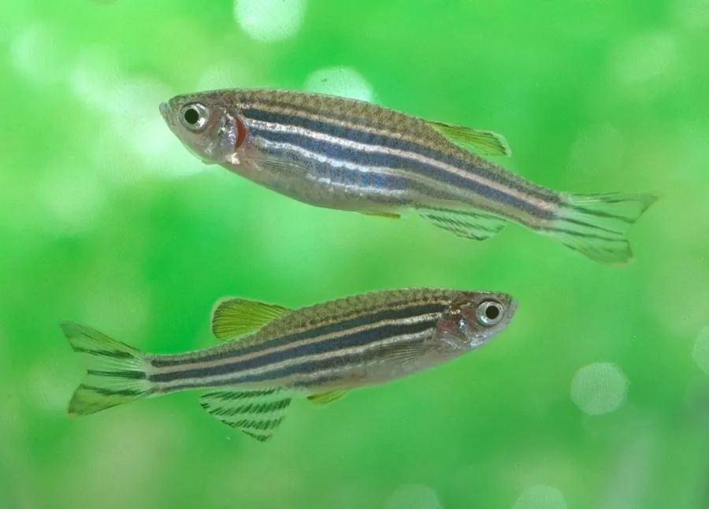

鱼类 · 动物界
斑马鱼 Danio rerio

体侧带蓝色纵纹的小型鲤科鱼，因胚胎透明、繁殖快，成为生命科学领域最重要的模式生物之一，被广泛用于发育和疾病研究。
- 分类
- 门脊索动物门纲硬骨鱼纲目鲤形目科鲤科属斑马鱼属
- 栖息环境
- 南亚及引种地区的溪流、稻田、沟渠和池塘，喜清澈缓流与水生植物
- 地理分布
- 原产印度、孟加拉国、尼泊尔等南亚地区，全球实验室和观赏鱼市场广泛分布
- 保护级别
- 暂无评估；中国未列入国家重点保护野生动物名录
物种志
斑马鱼体细长、侧扁，体侧有 4–5 条深蓝色的水平纵纹，与银白色的底色相间，就像斑马的花纹，因此得名。成鱼体长一般 3–5 cm，雌鱼腹部较圆，雄鱼体色更鲜艳、体型较瘦长。
斑马鱼原产南亚的印度、孟加拉国、尼泊尔等地的溪流、稻田和沟渠，喜欢清澈的缓流水体。它是杂食性鱼类，吃浮游动物、昆虫幼虫、藻类和鱼卵。繁殖时多在清晨产卵，雌鱼一次可产数百粒卵，胚胎在受精后 24 小时内就发育出主要器官，约 3 天孵化。斑马鱼是生命科学领域的模式生物明星：它的基因组与人类约有 70% 的基因同源，胚胎几乎透明便于直接观察，繁殖周期短、饲养成本低，被广泛用于发育生物学、遗传学、药物筛选和人类疾病模型研究。中国多个城市都建有斑马鱼研究平台，它同时也是水族市场上的常见观赏鱼。目前它没有IUCN 的正式评估，中国未将其列入国家重点保护野生动物名录。
形态与习性
- 食性杂食性，吃浮游动物、昆虫幼虫、藻类和鱼卵
- 体长一般 3–5 cm
- 寿命约 3–5 年
- 繁殖清晨产卵，一次数百粒，约 3 天孵化
- 科研价值基因组与人类约 70% 同源，是重要的模式生物
- 水温适宜水温 26–28 ℃
趣味知识
- 斑马鱼的胚胎几乎透明，科学家可以直接观察器官发育的全过程。
- 它的基因组与人类约有 70% 的基因同源，是研究人类疾病的重要模式动物。
- 斑马鱼产卵量很大，一尾雌鱼一次可产数百粒卵，方便进行大规模实验。